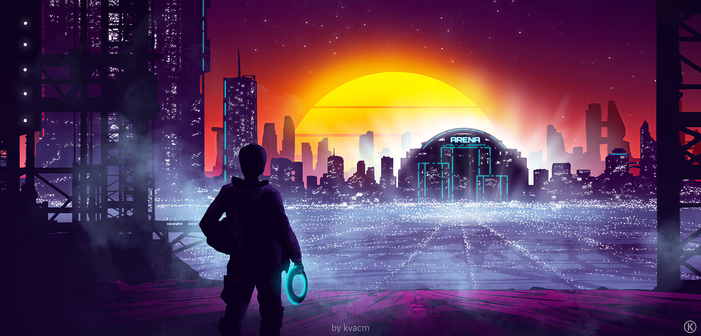

Realidad Virtual
Autor: Lòpez Contreras Emmanuel

Definicion
La Realidad Virtual (RV) es un entorno de escenas y objetos de apariencia real —generado mediante tecnología informática— que crea en el usuario la sensación de estar inmerso en él. Dicho entorno se contempla a través de un dispositivo conocido como gafas o casco de Realidad Virtual. Gracias a la RV podemos sumergirnos en videojuegos como si fuéramos los propios personajes, aprender a operar un corazón o mejorar la calidad de un entrenamiento deportivo para obtener el máximo rendimiento.